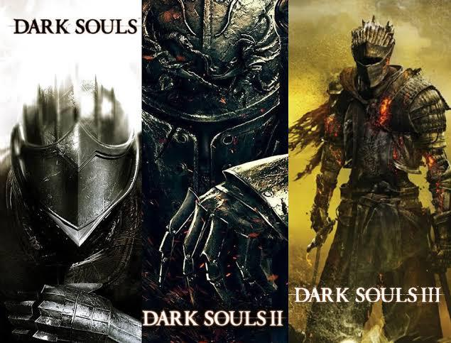

Dark Souls Bosses
One of Dark Souls staples in its franchise is the diverse amount of bosses throught all its games. The primary Machanics of the game is to defeat dark enemies through trial and error finding their weaknesses and coming back to use that to your advantage. Each boss bring a unique struggle and fighting style upon arrival. Each game ties themselves into a single world and throughout each game the previous one you have defeated play some role in the lore explained in other games.
Top 5 Bosses in the Core Games
| Boss Name | Location Of The Boss | Required or Optional |
|---|---|---|
| Dark Souls 1 | ||
| Great Grey Wold Sif | Darkroot Garden | Required |
| Dragon Slayer Ornstien and Executioner Smough | Anor Londo | Required |
| Artorias the Abysswalker | Royal Wood | Optional |
| Chaos Witch Quelaag | Blight Town | Required |
| Gravelord Nito | Tomb of The Giants | Required |
| Dark Souls 2 | ||
| The Pursuer | Dranfleic Castle | Required |
| Looking Glass Knight | King's Passage | Required |
| Scorpioness Najka | Shaded Woods | Required |
| Old Dragonslayer | Heide's Tower of Flame | Optional |
| Fume Knight | Brume Tower | Required |
| Dark Souls 3 | ||
| Abyss Watchers | Farron Keep | Required |
| Poniff Sulyvahn | Irithyll Of the Boreal Valley | Required |
| Yhorm the Giant | Profaned Captial | Required |
| Sister Friede | Painted world of Ariandel | Optional |
| Slave Knight Gael | The Ringed City | Optional |
World Building Effects on the Bosses
Below shows what is expected of the games. The dark and deserted world emphesises a fear of darkness and emptiness, to see a boss within this world gives it much more weight than if it was out in the open. The world builds this boss to be the pinnacle of this domain and helps a player grasp what they are up against.